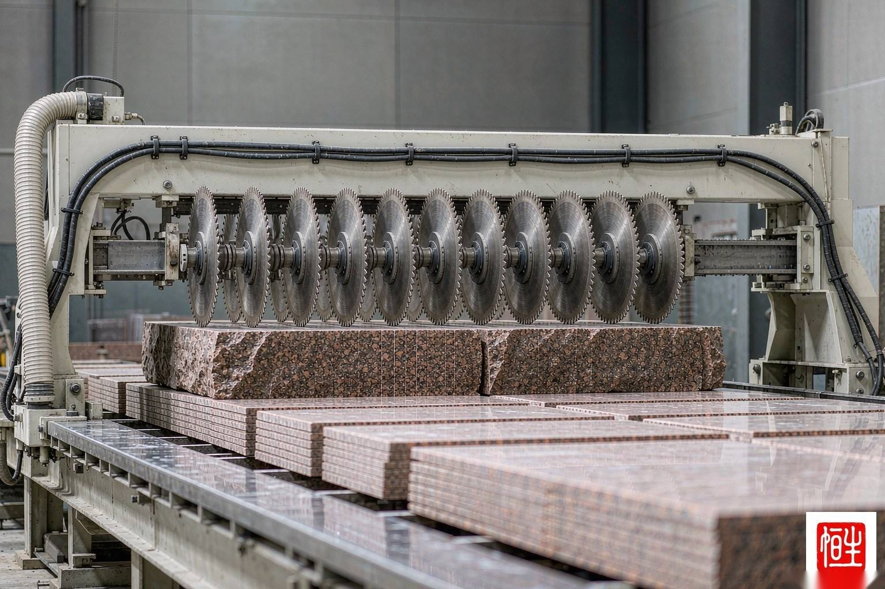
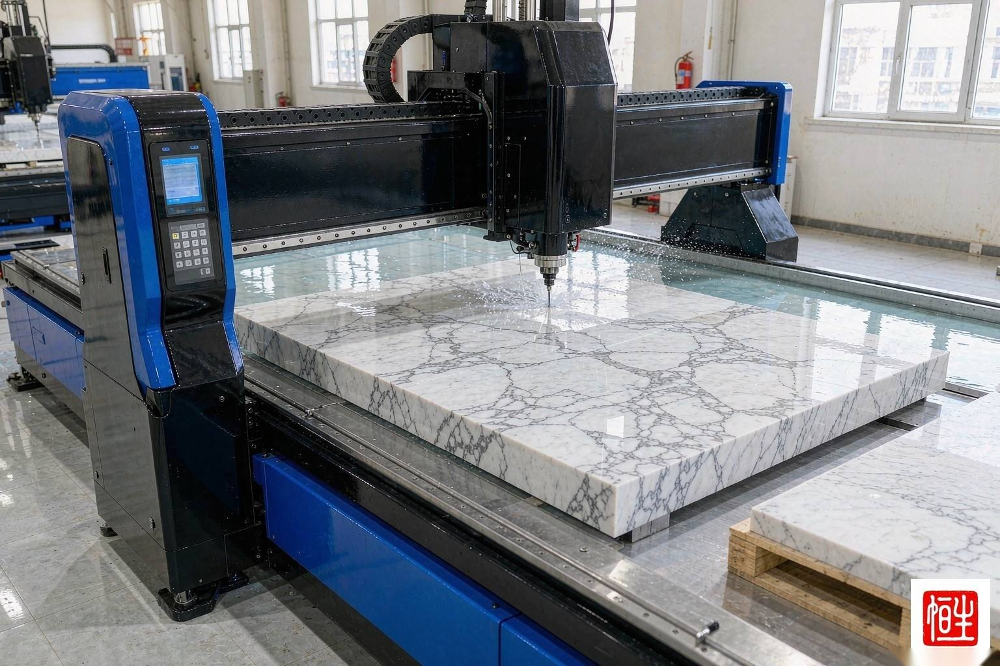
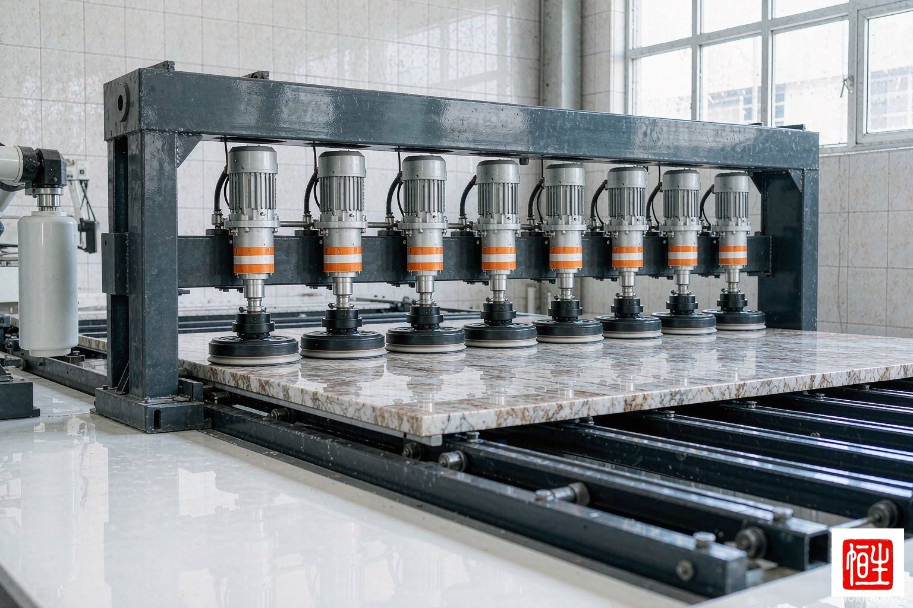

石材文庫
27 年累積的行業百科與技術白皮書
這裡彙集了恆生石材二十七年來在選材、加工、安裝、維護全鏈路上沉澱的技術文檔、行業百科與常見問答。所有 PDF 可直接下載；持續更新中。
五大文庫板塊
技術白皮書
- 《天然石材選材決策指南》（PDF · 4 頁）
- 《石英石 vs 大理石：選型決策》（PDF · 3 頁）
- 《大面積幕牆石材乾掛系統規範》（PDF · 3 頁）
- 《石材放射性核素限量與室內安全》（PDF · 3 頁）
行業百科
- 石材分類百科：岩漿岩 / 沉積岩 / 變質岩（PDF · 3 頁）
- 主流品種詞條：Carrara / Calacatta / Travertine / Emperador / 麻石（PDF · 3 頁）
- 石材國際組織與展會指南：MIA · Marmomac · 廈門石展（PDF · 3 頁）
- 石材標準索引：EN / ASTM / JIS / GB（PDF · 3 頁）
維護手冊
- 《大理石日常維護指南》（PDF · 3 頁）
- 《石材防護劑選型與施工》（PDF · 3 頁）
- 《石材翻新 / 結晶 / 拋光流程》（PDF · 3 頁）
- 《石材病症排查一覽表》（PDF · 3 頁）
標準索引
- 歐洲標準速查：EN 12057 / 12058 / 1341 / 1469（PDF · 3 頁）
- 美國標準速查：ASTM C503 / C568 / C615（PDF · 3 頁）
- 國標速查：GB/T 19766 / 18600 / 18601（PDF · 3 頁）
- 日本標準速查：JIS A 5003 / 5006（PDF · 3 頁）
- 歐美中標準對照與項目應用指南：EN ↔ ASTM ↔ GB（PDF · 3 頁）
FAQ
- 石材色差與大面積鋪裝（PDF · 3 頁）
- 石材防滑與抗污染處理（PDF · 3 頁）
- 石材供貨周期與最小起訂量（PDF · 3 頁）
- 石材驗收標準與爭議處理（PDF · 3 頁）
媒體報導
- 石材行業趨勢年度報告（恆生技術中心發佈）（PDF · 3 頁）
- 品牌資料包 Media Kit（公司簡介 / 圖庫素材）（PDF · 3 頁）
- 展會演講與技術分享彙編（PDF · 3 頁）
本期下載榜 Top 10
依據近 12 個月設計師與招標方下載量排序，全部文檔免費提供，點擊文檔名或 ⬇ PDF 按鈕即可直接下載原件。
| # | 文檔名稱 | 分類 | 頁數 | 適用讀者 |
|---|---|---|---|---|
| 1 | 《天然石材選材決策指南》 | 技術白皮書 | 4 頁 · ⬇ PDF | 建築師 / 業主方 |
| 2 | 《大面積幕牆石材乾掛系統規範》 | 技術白皮書 | 3 頁 · ⬇ PDF | 幕牆顧問 / 施工方 |
| 3 | 《酒店石材應用全案手冊》 | 場景專輯 | 3 頁 · ⬇ PDF | 酒店管理公司 / 設計院 |
| 4 | 《石材病症排查一覽表》 | 維護手冊 | 3 頁 · ⬇ PDF | 物業 / 維保單位 |
| 5 | 《石英石 vs 大理石：選型決策》 | 技術白皮書 | 3 頁 · ⬇ PDF | 業主 / 室內設計師 |
| 6 | 《石材防護劑選型與施工》 | 維護手冊 | 3 頁 · ⬇ PDF | 施工方 / 維保單位 |
| 7 | 《奢石背景牆對紋排版指南》 | 場景專輯 | 3 頁 · ⬇ PDF | 深化設計 / 安裝班組 |
| 8 | 《石材放射性核素限量與室內安全》 | 技術白皮書 | 3 頁 · ⬇ PDF | 招標方 / 監理 |
| 9 | 《大理石日常維護指南》 | 維護手冊 | 3 頁 · ⬇ PDF | 物業 / 酒店工程部 |
| 10 | 《地鐵與機場高防滑石材應用》 | 場景專輯 | 3 頁 · ⬇ PDF | 交通基建業主 |
選材前最值得弄清的 8 個概念
石材文明簡史：從金字塔到數位礦山
人類使用天然石材的歷史超過五千年。理解這條時間線，您就會明白：今天一塊標準大板背後，是一部濃縮的技術演化史——而恆生石材正是站在這條鏈條的最新一環。
吉薩金字塔 · 花崗岩的第一次大規模應用
古埃及人從阿斯旺採掘花崗岩，用銅鑿與木槓桿開採、尼羅河船運抵吉薩——人類第一次完成「礦山遠距離運輸 + 精密切割 + 大規模施工」的全鏈條組織。
帕德嫩神廟 · 大理石建築的黃金標準
雅典人以潘泰利山大理石建造帕德嫩神廟，確立了「白色大理石 = 永恆與神聖」的建築美學，這一審美傳統延續至今——也正是今天白色系大理石長盛不衰的源頭。
羅馬 · Carrara 礦山開採與「石材貼面」發明
羅馬人系統開採 LUNA（今 Carrara）白色大理石，並發明了「混凝土結構 + 大理石飾面」的建造方式——這正是現代石材幕牆乾掛體系的思想原型。
文藝復興 · 米開朗基羅與《大衛》
一塊被閒置 25 年、曾被鑿壞的 Carrara 巨型荒料，被米開朗基羅雕成《大衛》——石材從「建築材料」躍升為「藝術語言」，也讓 Carrara 成為世界白色大理石的代名詞。
工業革命 · 蒸汽砂鋸讓大理石進入量產
蒸汽動力砂鋸與鐵路運輸出現，歐洲大理石首次實現規模化開採與跨國貿易，紐約、倫敦、巴黎的銀行與劇院掀起大理石飾面浪潮。
金剛石工具革命 · 框架鋸與串珠鋸
金剛石框架鋸取代砂鋸、金剛石串珠繩鋸用於礦山開採，切割效率提升一個數量級，板材成本大幅下降——大理石從豪宅專屬走向商業空間與住宅普及。
數控時代 · 五軸 CNC 與水刀
五軸數控橋切機與水刀切割機普及，異形加工、精準拼花、薄板複合成為標準能力；「設計圖紙直達機台」的數位化生產開始取代手工放樣。
智慧礦山與綠色認證
AI 視覺分級、大板掃描建模、數位紋理拼花成為頭部工廠標配；EPD 環境產品聲明與碳足跡核算成為國際工程招標的新門檻——石材這門五千年的生意，正在被重新定義。
恆生石材發展史：一間香港雲石舖的 27 年
從 1999 年香港的一間雲石工場，到今天輻射 60+ 個國家礦區直供、累計 4,200+ 工程項目的石材科技企業——恆生的每一步，都踩在行業變革的節點上。
創業期 1999–2007 · 香港工場時代
1999 年在香港創立，從本地住宅與商鋪的雲石工程做起。那時香港裝修行業講究「快、靚、正」，我們用一塊塊手工磨邊的門檻石與檯面，積累了第一批口碑客戶，也沉澱了對「交期與品質零妥協」的企業基因。
紮根期 2008–2015 · 礦山直供與自建基地
為擺脫中間批發環節，我們直入福建、山東等礦區建立直供關係，如今已覆蓋 180+ 個海內外礦山；並在水頭自建 80,000㎡ 加工基地，把橋切、水刀、紅外線定位搬進自家廠房——「礦山到現場」一體化自此成型。
升級期 2016–2021 · 數控化與體系認證
先後引入五軸 CNC 與數控拋光線，累計沉澱 220+ 道專屬加工工藝；建立 68 個品質檢測節點的全流程管控，並通過 ISO 9001 / ISO 14001 雙體系認證，從「工場」蛻變為「工廠」。
出海期 2022–今天 · 石材科技與全球工程
AI 智能檢測、大板掃描與數位拼花上線，綠色製造與 EPD 碳足跡管理接軌國際；工程足跡遍佈中東、東南亞、歐洲，服務 1,000+ 星級酒店項目——「恆生石材」正在成為國際開發商名單上的常客。



石材家族百科：六大岩性速查
商業上統稱的「石材」，在地質學上分屬三個家族：岩漿岩、沉積岩、變質岩。弄清您手上的項目屬於哪一族，一半的選材問題就有了答案。
大理石Marble · 變質岩
石灰岩經高溫高壓重結晶而成，主成分碳酸鈣。紋理華麗、可塑性好、鏡面效果出眾，但耐酸性弱——適合室內牆地面、檯面（慎接觸酸性液體）、背景牆與柱飾。
CarraraCalacattaNero MarquinaEmperador花崗岩Granite · 岩漿岩
岩漿冷凝結晶而成，石英與長石賦予它極高硬度與耐磨性，吸水率低、耐酸鹼——戶外廣場、幕牆、廚房檯面與高人流地面的首選。
G682G603Black Galaxy山東白麻石灰岩Limestone · 沉積岩
海底碳酸鈣沉積而成，質感溫潤均勻、色調柔和，歐洲建築師的最愛——適合外牆乾掛、室內牆面與低磨損地面，忌接觸強酸。
PortoroJuraMoleanos洞石Travertine · 石灰華
溫泉碳酸鈣沉澱形成，帶天然孔洞與波浪紋理，羅馬古城的地標材質——經補膠翻磨後用於商場、酒店大堂可營造獨一無二的歷史感。
Roman ClassicNoceSilver砂岩Sandstone · 沉積岩
石英砂粒膠結而成，亞光質感、防滑性佳、色調溫暖——景觀工程、外牆與休閒空間常用，注意選擇緻密品種以降低吸水率。
Yellow SandstoneTeakwood板岩與石英岩Slate / Quartzite · 變質岩
頁岩變質成板岩可層片狀剝離，適合屋面與景觀；石英岩由砂岩變質而來，硬度接近花崗岩卻帶大理石般紋理，是近年檯面市場的黑馬。
Rustic SlateWhite Macaubas表面處理工藝：8 種常見飾面對照
同一塊荒料，不同表面工藝，呈現完全不同的光感、防滑性與維護成本。這張表是恆生 220+ 道專屬工藝中最常用的 8 種速查版。
| 飾面工藝 | 工藝要點 | 視覺 / 觸感 | 防滑性 | 適用場景 |
|---|---|---|---|---|
| 拋光面 Polished | 逐級金剛石磨頭精磨至鏡面 | 鏡面高光，紋理最鮮明 | 較低 | 室內牆面、大堂地面、檯面 |
| 啞光面 Honed | 磨至細膩啞光即止，不封釉 | 溫潤柔光，觸感如緞 | 中等 | 酒店客房、衛浴、樓梯 |
| 火燒面 Flamed | 高溫火焰灼燒使表層晶體崩落 | 顆粒狀粗糙面 | 優秀 | 戶外廣場、車道、泳池邊 |
| 噴砂面 Sandblasted | 高壓砂流均勻打毛表面 | 均勻細膩毛面 | 優秀 | 景觀、外牆、防滑步道 |
| 荔枝面 Bush-hammered | 荔枝錘頭敲擊形成點狀凹凸 | 點狀肌理，古樸厚重 | 優秀 | 外牆乾掛、園林地鋪 |
| 皮革面 Leathered | 輕磨 + 刷拋保留天然紋路起伏 | 類皮革觸感，啞光 | 良好 | 高端檯面、吧台、傢俬 |
| 酸洗面 Antiqued | 酸蝕表面形成仿古柔光 | 仿古柔光，紋理柔和 | 良好 | 復古風格室內、藝術背景 |
| 斧剁面 Picked | 斧刃剁擊形成規則溝槽 | 條狀肌理，粗獷 | 優秀 | 台階、景觀擋牆 |
行業標準體系與核心術語
看懂檢測報告上的標準號與參數，是與供應商專業對話的第一步。以下為恆生出貨報告中最常引用的標準與參數速查。
| 標準編號 | 體系 | 適用範圍 | 關鍵內容 |
|---|---|---|---|
| EN 1341 / 1342 / 12058 | 歐盟 CE | 室外地鋪石 / 路緣石 / 幕牆與地面板材 | 尺寸公差、抗折強度、防滑與耐久分級 |
| ASTM C503 / C615 / C629 | 美標 | 大理石 / 花崗岩 / 石灰岩規範 | 壓縮強度、吸水率、密度分級門檻 |
| GB/T 19766 / GB/T 18601 | 國標 | 天然大理石 / 花崗岩建築板材 | 規格允許偏差、外觀質量、理化指標 |
| JIS A5003 | 日標 | 石材一般試驗方法 | 吸水率、壓縮與彎曲試驗方法 |
| EN 12004 / ANSI A118 | 歐盟 / 美標 | 石材膠粘劑配套 | 粘結強度分級，乾掛與濕貼選型依據 |
- 吸水率 Water Absorption
- 石材孔隙吸水能力，百分比越低越緻密耐污。一般大理石 ≤0.5%、花崗岩 ≤0.3% 為優。
- 莫氏硬度 Mohs Hardness
- 抗刮擦能力 1–10 級。花崗岩約 6–7，大理石約 3–4——這解釋了為何大理石檯面忌直接切割。
- 抗折強度 Flexural Strength
- 板材受彎不斷裂的極限，乾掛幕牆與長條檯面的安全核心指標。
- 體積密度 Bulk Density
- 每立方米重量（kg/m³），影響結構荷載計算與運輸成本，一般 2,500–2,800。
- 防滑值 R 值 / DCOF
- 德標 R9–R13 與美標 DCOF≥0.42（濕區）——公共空間地面選材的硬性門檻。
- 追紋 / Book-match
- 將相鄰大板鏡像鋪開，紋理對稱如展開書頁，是奢華酒店的經典拼貼手法。
- 大板規格 Slab Size
- 常規 2,400×1,200mm 起，紋理連貫性與出材率直接影響成本與效果。
- EPD 環境產品聲明
- 依 ISO 14025 發佈的生命週期碳足跡文件，國際綠建項目招標的加分門檻。
關於文庫與文檔的常見問題
全部文檔免費提供，並允許在投標、報建與內部培訓中引用（註明出處更佳）。涉及標準原文的版權條文以對應標準機構的授權為準，我們提供的是應用解讀與工程實踐指引。
可以。針對招標方、設計單位與施工方，技術團隊可按項目氣候、應用部位與預算規模定制專題白皮書（常規 2 週內交付），內容涵蓋選材比選、節點做法與維護計劃。
文庫每季度更新一次，新增場景專輯與標準解讀。可通過聯繫頁訂閱，或關注資訊動態欄目的「文庫更新」分類，我們會在第一時間推送目錄摘要。
需要定制技術文檔？
對於招標方、設計單位、施工方，我們的技術團隊可為特定項目定制（按項目氣候、應用部位、預算規模）的專題白皮書。